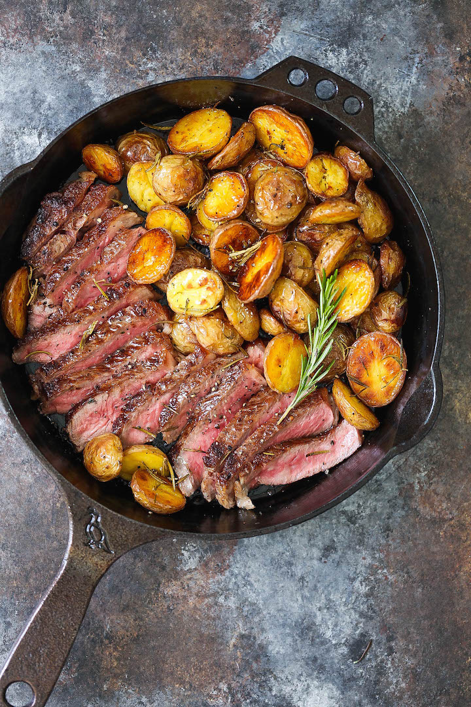

Soccer is my favorite sport, I have been playing it since I was very little, and now I play on a team. It is the most poppular sport in the world for a reason.
The Beach is my favorite place to visite, it is relaxing, and beautifull. I could spend all day at the beach.

I love food, and i eat it multiple times a day. My top tree favorites foods are in order down below.
